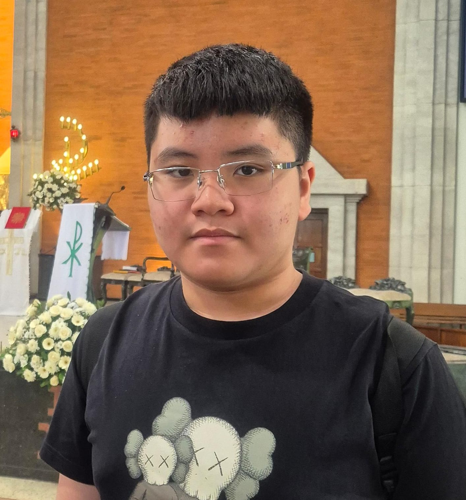

Keberangan di indonesia
Home
Artikel
tentang saya

Hai, nama saya Lorenzo Litan. Saya berusia 13 tahun. Saya siswa kelas 2 SMP di Singapore Intercultural School Surabaya. Saya membuat situs web ini sebagai proyek sekolah. Semoga bermanfaat!